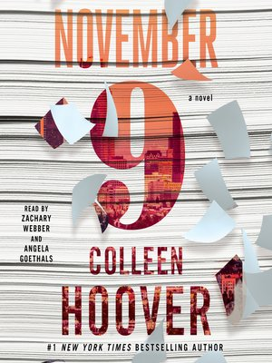

NOVEMBER NINE: By colleen Hoover
November Nine is a romance, contemporary, young adult fiction published on the 10th of November 2015.

Blurb:
Fallon meets Ben, an aspiring novelist, the day before her scheduled cross-country move. Their untimely attraction leads them to spend Fallon’s last day in L.A. together, and her eventful life becomes the creative inspiration Ben has always sought for his novel. Over time and amidst the various relationships and tribulations of their own separate lives, they continue to meet on the same date every year. Until one day Fallon becomes unsure if Ben has been telling her the truth or fabricating a perfect reality for the sake of the ultimate plot twist.
Can Ben’s relationship with Fallon—and simultaneously his novel—be considered a love story if it ends in heartbreak?
Beloved #1 New York Times bestselling author Colleen Hoover returns with an unforgettable love story between a writer and his unexpected muse.
Retrieved from https://www.goodreads.com/book/show/25111004-november-9
Review
5 stars I loved this book. I really liked the writing style of this book and how it showed two point of views in different timelines. I have a love hate relationship with some of the characters but I strongely dislike Ben. I loved the plot twists I didn't expect any of them. I liked the one day a year, the settings, the detail dialogue and so much more.